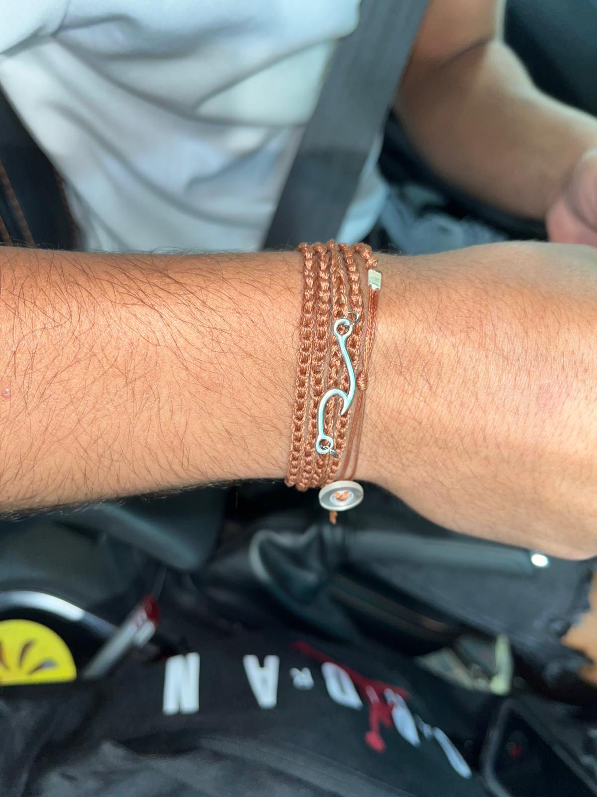
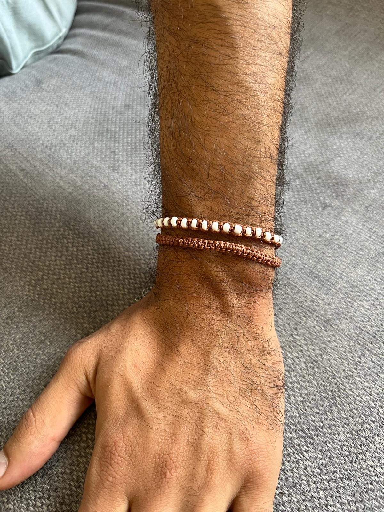
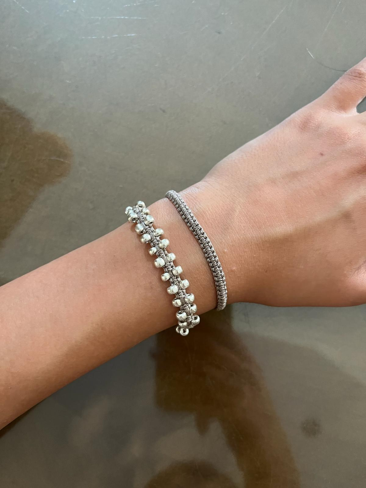
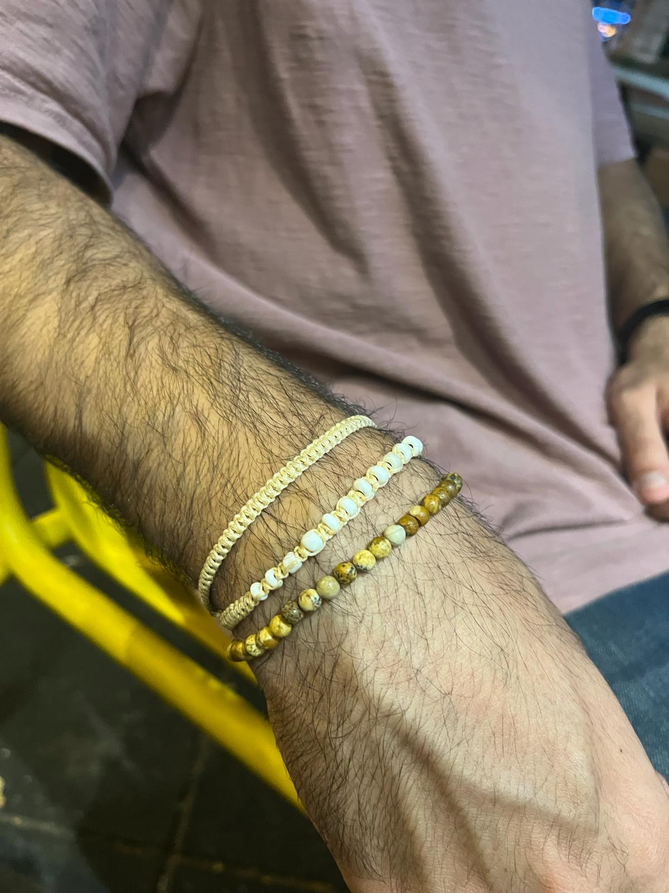

A.Y Jewelry-Jewelry that I make and sell
A.Y Jewelry stands as one of the most significant endeavors in my life. I pour my passion into crafting exquisite jewelry, dedicating considerable effort not only to the production process but also to its strategic marketing on Instagram.



